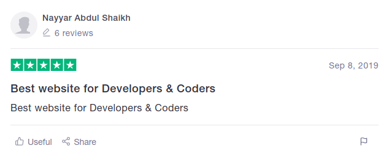
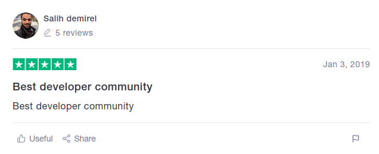
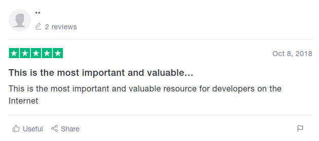

{%extends "layout.html"%}
About
{% block content%}
AskMate is a question and answer site for professional and enthusiast programmers. It is a privately held website, the flagship site of the LOGOS Development Inc., created in 2020 by Florin Ciocirlan, Mark Stan, Ioan Circiumaru, Negoita Arsino and Sorin Obreja. It features questions and answers on a wide range of topics in computer programming. It was created to be a more open alternative to earlier question and answer sites such as Experts-Exchange. The name for the website was chosen by voting in September 2019 by shareholders of LOGOS Inc.



{% endblock %}